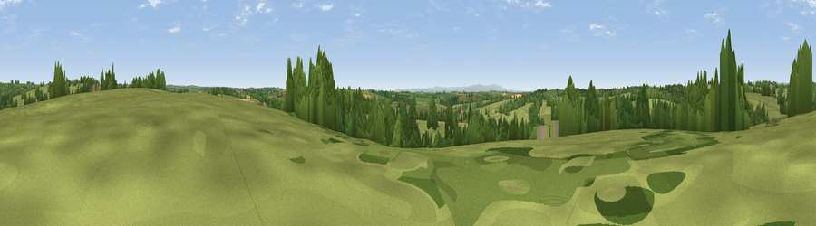

Viewpoint near Witheridge
#27844 in England · top 57% of its area beats it · near WitheridgeWhere it is
The exact computed spot (SS 78775 16225). Click the marker for map links.
The view, rendered

A 360° render of this exact spot computed from the terrain model, tree cover and land cover — summer colours, afternoon light, calibrated against photographs of famous viewpoints. Real trees, hedges and buildings will differ in detail.
The panorama
Grey silhouette: terrain skyline in each direction (720 bearings, Earth curvature and refraction included). Dashed green: skyline with trees (+15 m) and buildings (+8 m) as obstacles. Blue strip: how far the ground is visible on each bearing.
Where the view opens
Wedge length = distance to the farthest visible ground on that bearing (vegetation-aware). Rings at 10, 25 and 50 km.
What fills the view
74% grassland · 19% woodland · 6% cropland · 1% built-up
Angular shares of the visible panorama (visual magnitude), not map area. Landscape diversity 0.34 (0–1 Shannon).
Key numbers
More beautiful places nearby
The staircase of upgrades: each row has a higher view potential than everything closer. Driving times are estimates from straight-line distance, calibrated against real road routing — check an actual route before setting out.
| Place | Direction | Drive | Score |
|---|---|---|---|
| Viewpoint near Rackenford | NE · 5 km | ~11 min | 46.6 |
| Viewpoint near Rose Ash | N · 6 km | ~12 min | 58.4 |
| Viewpoint near Romansleigh | WNW · 6 km | ~13 min | 59.5 |
| Viewpoint near Romansleigh | WNW · 7 km | ~14 min | 59.6 |
| Viewpoint near Romansleigh | WNW · 8 km | ~17 min | 61.8 |
| Viewpoint near Chulmleigh | W · 9 km | ~18 min | 62.4 |
| Stoodleigh Beacon | ENE · 10 km | ~19 min | 66.7 |
| Viewpoint near Stockleigh Pomeroy | SE · 15 km | ~27 min | 69.7 |
50.93270, -3.72648 · source: screening · position refined by local search. Computed location — check access rights before visiting.